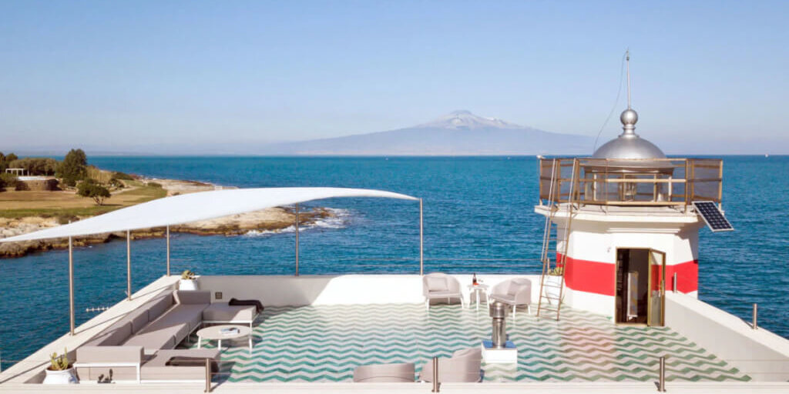

Ho.Re.Ca. · Progetti
Faro di Brucoli
Il Faro di Brucoli è diventato una luxury lighthouse dopo un attento e sapiente restauro architettonico eseguito da “ITINERA Studio Associato”, mantenendo le peculiarità della fortunata posizione naturalistica ed esaltando le caratteristiche architettoniche della struttura.
Descrizione
Il Faro di Brucoli è diventato una luxury lighthouse dopo un attento e sapiente restauro architettonico il cui progetto è stato eseguito da “ITINERA Studio Associato”, mantenendo le peculiarità della fortunata posizione naturalistica ed esaltando le caratteristiche architettoniche della struttura.
Gli ampi spazi outdoor sono stati arredati con la collezione “Cleo//Alu” di Talenti Outdoor Living, disegnata dall’architetto Marco Acerbis.
Il faro si trova alle porte della Val di Noto, in provincia di Siracusa, in una splendida ambientazione d’insieme che offre una vista mozzafiato sull’Etna. È stato inoltre dichiarato luogo di interesse monumentale.
Una perla della Sicilia, luogo intimo ed esclusivo, in cui i prodotti Talenti hanno contribuito alla magnifica riuscita del progetto.
La progettazione e la direzione lavori sono state seguite dall’Architetto Giuseppe Di Vita, l’Ingegnere Cataldo Pilato, dall’Ingegnere Filippo M. Vitale e i collaboratori Annalisa Cambio e Alessandra Torregrossa.
Col progetto del Faro di Brucoli, ITINERA Studio Associato ha vinto il premio PIDA interni 2020. Inoltre, è stato anche scelto come “Best Project 2020” da Archilovers.
Il Faro di Brucoli è il posto ideale per il vostro relax, tra le acque e la vegetazione della Sicilia e tutte le comodità di un resort a 5 stelle lusso.